Ниже Вы можете найти ответ на большинство вопросов, связанных с требованиями законодательтсва к предприятиям, использующим автомобили
Не нашли ответ на свой вопрос? Не расстраивайтесь! Задайте его нам в наиболее удобной для Вас форме и получите исчерпывающий ответ
Не можете найти образцы приказов, положений, локальных нормативных актов или путевых листов? Тогда Вам необходимо заглянуть сюда
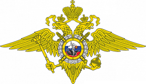 |
Органы внутренних дел (ГИБДД) в соответствии с положением о Госавтоинспекции безопасности дорожного движения Министерства внутренних дел Российской Федерации (утв. Указом Президента РФ от 15 июня 1998 г. № 711) |
| Ространснадзор (Управление госавтодорнадзора, транспортная инспекция) в соответствии с положением о Федеральной службе по надзору в сфере транспорта (утв. постановлением Правительства РФ от 30 июля 2004 г. № 398). | |
| Трудовая инспекция в соответствии с ТК РФ, а также с учетом приказа Минтранса РФ от 20 августа 2004 г. № 15 "Об утверждении Положения об особенностях режима рабочего времени и времени отдыха водителей автомобилей". | |
| Налоговая инспекция в соответствии с НК РФ, а также с учетом приказа Минтранса РФ от 18 сентября 2008 г. № 152 "Об утверждении обязательных реквизитов и порядка заполнения путевых листов" |
Также, в отдельных случаях, возможны проверки Ростехнадзора, Роспотребнадзора, Минздрава, ну и конечно Прокуратуры
Посмотреть сводный план проверок на календарный год можно на сайте прокуратуры.
Отдельно стоит отметить, что в Законы о Госавтоинспекции и Ространснадзоре в 2018 году были внесены изменения в виде моратория на плановые проверки субъектов транспортной деятельности. Однако, радоваться рано, т.к. согласование внеплановой проверки с прокуратурой теперь не требуется. Соответственно, любой недочёт в путевом листе или документах на перевозимый груз при рейдовом мероприятии (проверке на дороге) становится поводом вынести определение о расследовании деталей совершения административного проступка, а другими словами, посмотреть, "что там у фирмы внутри".
Многие руководители считают, что все, как бы это помягче выразится - "чрезмерные" требования в области обеспечения безопасности дорожного движения относятся к кому угодно, только не к ним. "Фирма, видите ли, не транспортная, отходы с АЭС и детей не перевозит, да и автомобилей один-два, да и те маленькие. Да и вообще! С налоговой бы разобраться, а тут вы еще со своим транспортом"... Или "да у нас проверок никаких 10 лет не было. Почему нас вдруг должны проверять?"
Всё дело в том, что законодательство в отношении транспорта постоянно конкретизируется, ужесточается и обрастает спорными, но прецедентными решениями.
С появлением чётко обозначенных реквизитов путевого листа в виде отметок о прохождении предрейсового медицинского осмотра и предрейсового техосмотра автомобиля выезжать без путевки или с неправильно заполненным путевым стало чревато приглашением на внеплановую проверку с вытекающими последствиями в виде штрафов, предписаний и, даже ареста транспортных средств.
Отдельные неприятности будут ожидать руководство предприятий, чьи водители регулярно и/или грубо нарушают ПДД, либо попадают в ДТП. И связано это с реализацией нацпроекта "Безопасные Дороги". Просто попробуйте ответить себе, как прокурору, на вопрос: "Всё ли я сделал(а), чтобы водители не создавали аварийные ситуации на дороге?"
Для того, чтобы утвердительно ответить на этот вопрос, читаем далее...
Итак, если Вас всё-таки пригласили в территориальное подразделение ГИБДД или Ространснадзор, целесообразно руководствоваться логикой организации транспортного процесса, а также чек-листом (опросным листом) инспекторов. Листы эти составлены, на мой взгляд, криво, т.к. где-то они изобилуют ненужными подробностями, а где-то предлагают обобщенное требование, которое инспектор непременно "раскроет". Тем не менее, истребовать то, что не указано в проверочном листе, инспектор не вправе (Федеральный закон от 26.12.2008 N 294-ФЗ "О защите прав юридических лиц и индивидуальных предпринимателей...").
Суть требований транспортного законодательства сводится к тому, что если в Вашей компании есть автомобиль, значит он должен быть исправен, иметь парковочное место и водителя. Последний должен быть допущен до управления конкретным ТС, и помимо этого, ему надлежит быть здоровым и крайне квалифицированным. Вся деятельность, связанная с эксплуатацией транспортного средства должна быть отражена в путевых листах, журналах и локальных нормативных актах (приказах, положениях и проч.).
Однако, требования несколько отличаются по объёму к тем предприятиям, которые используют легковые авто для собственных нужд (не зарабатывают деньги), и всех остальных.
Так, предприятия первой группы обязаны исполнять только общие положения статьи 20 Закона о безопасности дорожного движения, а именно: наличие документально подтвержденного парковочного места для автомобиля, наличие действующих полиса ОСАГО и диагностической карты, назначение сотрудника водителем авто (приказ + внесение изменений в должностные инструкции), регулярное техобслуживание автомобиля (договор на ТОиР), предрейсовый техосмотр автомобиля, а также предрейсовый медицинский осмотр водителя.
Тем, кто эксплуатирует грузовые автомобили, автобусы (даже для собственных нужд), а также осуществляет перевозку (доставку за деньги) на легковых авто нужно исполнять специальные требования Закона о БДД, которые конкретизированы в Приказе Минтранса №7. Более подробно положения этого приказа, равно как и прочие требования будут рассмотрены ниже.
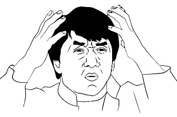
При проверках, кто бы не проверял, любой инспектор надзорного ведомства пользуется опросным листом. Пример выдержки из такого справочника инспектора Ространснадзора приведен выше. К сожалению, подобным чек-листом из Минтруда мы не распологаем.
Тем не менее, исходя из опыта, можно с уверенностью утверждать, что трудовиков будет интересовать укомплектованность штата квалифицированными сотрудниками (ответственный за БДД, контроллёр (механик) по выпуску автомобилей на линию, водители и т.д.) со всеми приказами, положениями, инструкциями, инструктажами и т.д. и наличие договора на организацию и проведение предрейсовых и периодических медосмотров, ведение путевой документации и всего, что связано с охраной труда и не входит в компетенцию БДДшника.
Также, особое внимание стоит уделить Приказу Минтранса N 15. Этот приказ целесообразно превратить в положение о труде и отдыхе водителей автомобилей в организации и издать приказы о соблюдении графиков работы, сменности и т.д. Особенно это касается тех, кто занимается пассажирскими перевозками.
Разбору вышеозначенного приказа будет посвящен отдельный пост в разделе Водители.
Другими словами, с точки зрения трудовой инспекции, в организации, где есть автомобили должны работать здоровые и отдохнувшие, но обученные и простажированные водители, но не более установленного времени (наличие пробок и проблем на дорогах никого не интересует). Вокруг водителя должны "кружиться" не менее весёлые, здоровые и обученные ответственный за безопасность дорожного движения, механик, медик и инженер по охране труда. Последние должны работать в огромных светлых помещениях с оборудованными по установленным нормам санитарно-бытовыми помещениями, помещениями для приема пищи и комнатами психологической разгрузки, оборудоваными посты для оказания первой помощи, укомплектованные аптечками для оказания первой помощи, и не только.
И всё вышесказанное - не сарказм, а Приказ Минтруда России от 06.02.2018 N 59н "Об утверждении Правил по охране труда на автомобильном транспорте".
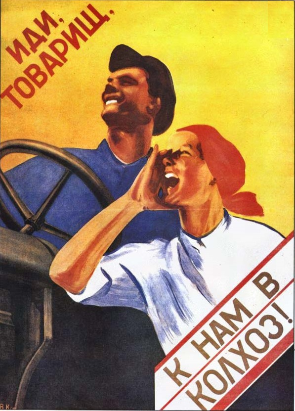
Экологические требования к предприятиям, эксплуатирующим транспорт не сложны. По сути, необходимо доказать, что ТС не дымные и не токсичные, расходники после ремонта и эксплуатации, такие, как отработанные автомасла, технические жидкости, аккумуляторные батареи, автопокрышки, испачканная ветошь и т.д., утилизируются, а не выбрасываются на помойку или в ближайший парк, а сами автомобили вымыты.
Если Ваши автомобили прошли ГТО (а иначе не получить полис ОСАГО), то измерение дымности и токсичности уже проведено, что подтверждает диагностическая карта. Также, измерение СО/СН должно проводиться при плановом техобслуживании автомобиля в автосервисе. После ремонтов и ТО именно автосервис вывозит и утилизирует отходы. Таким образом, у Вас нет необходимости приобретать дорогостоящее оборудование и заключать договор на вывоз опасных отходов, если у Вас есть диагностическая карта ГТО и договор на техобслуживание и ремонт.
Если Вы пользуетесь услугами одной автомойки, заключите с ней договор на обслуживание. Если возиться с договором нет желания, создавайте письмо/приказ о мойке автомобиля "где и когда придётся", т.е. по необходимости.
P.S.
В случае, если у Вас крупное автомобильное предприятие международного уровня или хочется пооооолностью соответствовать законодательству, то придётся получать экологический паспорт, вести расчеты предельно допустимых выбросов (ПДВ) или временно согласованных выбросов (ВСВ) в атмосферу и предельно допустимых сбросов (ПДС) в водоемы; получать разрешение на ПДВ или ВСВ, разрешение на сброс воды и водопользование, разрешение на хранение отходов, разрешение на вывоз отходов; вести журналы учёта измерений и корректировки СО/СН и токсичности и прочую государственную отчетность по охране окружающей среды, а также другие обязательные к выполнению нормативы, правила, инструкции. Короче говоря, без дипломированного эколога или Греты в штате Вам не обойтись.

Согласно Статье 20 и 23, Федерального закона от 10 декабря 1995 г. № 196-ФЗ «О безопасности дорожного движения» все юрлица и ИП, независимо от направления своей деятельности деятельности, количества и типа транспортных средств обязаны организовывать и проводить мероприятия по безопасности дорожного движения. Однако, все же имеются различия. Итак:
Процесс выпуска авто на линию выглядит следующим образом:
Стоит помнить, что исполнять обязанности, связанные с выпуском автомобилей на линию могут только специалисты, прошедшие специальное обучение (см. пост ниже).
В итоге: если автомобили Вашей организации - легковые и перевозят только собственных сотрудников и/или грузы, то выполнить необходимо только последние 2 пункта. Во ВСЕХ остальных случаях - ВСЕ пункты.
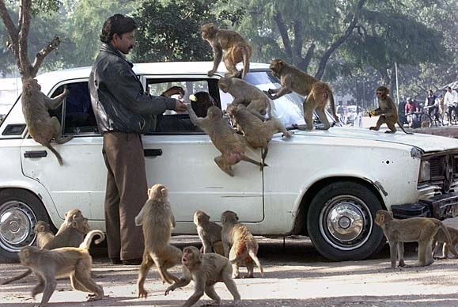
Давайте разберём следующую ситуацию: есть ООО "Ромашка", владеющая небольшим фургоном, на котором директор лично, в сопровождении бухгалтера перевозит производимый предприятием товар до собственной торговой точки. Является ли директор - водителем, перевозимый товар - грузом, бухгалтер пассажиром, а действие - перевозкой пассажиров и грузов?
С точки зрения законодательства (определения есть во многих документах) человек, управляющий автомобилем - водитель, любое другое лицо, находящееся в автомобиле - пассажир, а любая материальная ценность - груз. Если водитель автомобиля перевозит пассажира и груз из точки "А" в точку "Б", значит осуществляется их перевозка, верно? Ответ: НЕТ, не верно!
Проблемы начнутся со слова "пассажир". Правила дорожного движения определяют пассажира, как лицо, кроме водителя, находящееся в транспортном средстве (на нем), а также лицо, которое входит в транспортное средство (садится на него) или выходит из транспортного средства (сходит с него). Однако, Федеральный закон от 8 ноября 2007 г. № 259-ФЗ «Устав автомобильного транспорта и городского наземного электрического транспорта» (один из основных документов для транспортников) трактует определение термина "пассажир" следующим образом: физическое лицо, заключившее договор перевозки пассажира, или физическое лицо, в целях перевозки которого заключен договор фрахтования транспортного средства. Т.е. бухгалтер из нашего примера одновременно и пассажир и нет, т.к. бухгалтер не заключал договор фрахтования или, другими словами, не оплачивал проезд...
С грузом история примерно та же, что и с пассажиром.
Но, постойте! А если автомобиль движется пустой? НЕТ! Не может автомобиль не быть укомплектованным огнетушителем, знаком аварийной остановки, если он не входит в штатную комплектацию автомобиля и т.д. Автомобиль всегда что-то везёт кроме водителя. Можем, условно, назвать это багажом, но и данное определение ещё сильнее запутает ситуацию.
Но является ли пассажир (лицо находящееся в авто помимо водителя) и груз (багаж) объектом перевозки?
Определение термина "Перевозка" дается в вышеуказанном 259-ФЗ и более полно раскрывается в статье 40 Гражданского кодекса РФ. По сути "перевозка" - это когда что-либо доставляется из точки "А" в точку "Б" по договору, за деньги!
Таким образом, продукция ООО "Ромашка" и бухгалтер, перевозимые с завода в магазин не являются объектами перевозки, и деятельность предприятия никак не связана с перевозкой пассажиров и грузов. Это же неиссякаемый источник радости, пользоваться автомобилем фирмы, и не являться при этом перевозчиком, т.к. почти все транспортные законы и приказы с вложенной в них мощной законотворческой мыслью имеют отношение именно к перевозчикам!
Начнём сбивать градус радости.
Так что же всё-таки делается с "грузом" и "пассажиром"? Как это назвать? Транспортировка? Некоммерческая перевозка? Где дан соответствующий термин? Что ответить транспортному инспектору? Чем оперировать юристу в суде? К сожалению, на эти вопросы нет ответа, потому что Минтранс, несмотря на очевидную бредовость ситуации, не хочет навести порядок в сфере НЕперевозок, провоцируя многих и многих руководителей небольших предприятий на нарушение Закона. Ведь должна же быть разница между требованиями к фирмам, осуществляющим перевозки детей автобусами и маленькой компанией, доставляющей пирожки из собственной пекарни в собственный магазин легковым автомобилем?
Несколько ситуацию разрядили изменения в 20 статью Федерального закона «О безопасности дорожного движения». Так, в пункте 1 отдельно были установлены требования к предприятиям, эксплуатирующим легковые автомобили для собственных нужд. Данный пункт больше похож на лозунг "за всё хорошее, против всего плохого", что ввиду отсутствия конкретики в подзаконных актах (нет приказов о том, как соблюдать БДД таким фирмам), тут же создало ещё большую неразбериху.
Так чем же всё-таки нужно руководствоваться ООО "Ромашка", как эксплуатанту ТС, чтобы выполнить требования Законодательства? Любой проверяющий сошлётся на все сотворённые ранее законодательные сочинения о нелегком труде перевозчиков и потребует исполнения именно этих норм ввиду отсутствия законов и приказов для НЕперевозчиков...
Вывод: ООО "Ромашка" не является перевозчиком, но её руководству по большей части придётся выполнить все требования транспортного законодательства, включая те, которые созданы для перевозчиков, так как других просто нет!
Судебная практика в нашей стране подтверждает всё вышесказанное (смотрите, например, определение Верховного Суда РФ от 01.09.2014 N 302-КГ14-529, решение Омского областного суда от 09.02.2016 по делу N 77-80/2016).

Предрейсовый контроль технического состояния транспортных средств (далее - предрейсовый технический контроль) - комплекс мероприятий, организуемый и осуществляемый юридическими лицами и индивидуальными предпринимателями, эксплуатирующими автотранспорт с привлечением квалифицированных работников, с целью исключения выпуска на линию технически неисправных транспортных средств.
Предрейсовый контроль проводится осуществляется контролером технического состояния автотранспортных средств, соответствующим Профессиональным и квалификационным требованиям, утвержденным приказом Министерства транспорта Российской Федерации от 28 сентября 2015 г. № 287, до выезда транспортного средства с места его постоянной стоянки.
При проведении предрейсового контроля проверяется работоспособность и состояние основных узлов и систем транспортного средства, влияющих на безопасность дорожного движения, на соответствие положениям технического регламента Таможенного союза «О безопасности колесных транспортных средств» , постановления Совета Министров - Правительства Российской Федерации от 23 октября 1993 г. № 1090 «О правилах дорожного движения» .
В случае, если при предрейсовом контроле не выявлены несоответствия требованиям, перечисленным выше, в соответствии с пунктом 16.1 порядка заполнения путевых листов, утвержденного приказом Министерства транспорта Российской Федерации от 18 сентября 2008 г. № 152, ставится отметка «прошел предрейсовый контроль технического состояния» и подпись с указанием фамилии и инициалов контролера, проводившего предрейсовый контроль, даты и времени его проведения. Выпуск транспортного средства на линию без отметки о прохождении предрейсового контроля и подписи контролера не допускается. Результаты проведенного предрейсового контроля заносятся в Журнал регистрации результатов предрейсового контроля
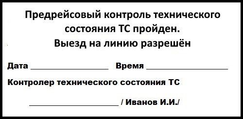
Но, с ответом на вопрос: "Какие предприятия должны проводить предрейсовый техосмотр автомобилей?" не всё так просто. Итак:
Прямая обязанность проводить предрейсовый техконтроль установлена для грузовых автомобилей и автобусов, а также для тех организаций, кто осуществляет перевозки легковым. Но, нужен ли предрейсовый осмотр автомобиля механиком тем предприятиям, кто использует легковые авто для собственных нужд? Попробуем разобраться.
1 пункт 20 статьи Закона о безопасности дорожного движения, посвященный как раз таким авто, прямо на необходимость проведения предрейсового техконтроля не указывает, однако требует эксплуатации исправных транспортных средств.
Приказ Минтранса о предрейсовом техконтроле во втором пункте указывает, что техосмотр перед выездом на линию проводится ВСЕМ без исключения автомобилям.
Приказ №7 Минтранса, в п.28, также не делает исключений для кого бы то нибыло, прямо указывая на всех эксплуатантов ТС.
Ещё один приказ Минтранса - Об обязательных реквизитах путевых листов, прямо указывает в п.16 и п.16.1, что предрейсовые медосмотры и предрейсовый техконтроль являются обязательными реквизитами. При этом, в Уставе автомобильного транспорта, в п. 6.2 прямо указано, что эксплуатация автомобилей, включая легковые, без путевого листа запрещена.
Конечно, приказы являются подзаконными актами, однако Законы говорят что делать, а приказы уже уточняют как именно.
Говоря проще: если на балансе предприятия есть автомобили, либо списывается ГСМ на арендованные авто, необходимо иметь в штате, как минимум специально обученного контролёра по выпуску автомобилей на линию. После обучения издаём приказ о назначении сотрудника на должность контролёра, выдаём сотруднику должностную инструкцию, метрологически поверенную аппаратуру, штамп (или вносим графу о прохождении ПТО в путевой лист), распечатываем журнал и контролируем, что делает новоиспеченный механик.
Есть вариант попроще: заключить с ООО "Предрейс" договор на выпуск автопарка на линию. Наши специалисты сделают даже больше, чем Вы ожидаете и это Вас приятно удивит!
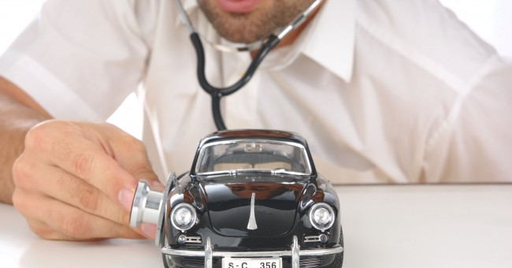
Итак, мы определились, что если на балансе предприятия есть автомобиль, либо есть расходы на ГСМ и ремонт транспорта - должен быть и предрейсовый технический контроль.
Проводить предрейсовый выпуск автомобиля на линию имеет право специально обученный сотрудник, назначенный на эту должность приказом.
Квалификационные требования к механику по выпуску транспорта (теперь он гордо именуется Контролёр по выпуску ТС на линию) сформулированы в Приказе Минтранса от 28.09.2015г. Согласно этому приказу контролёром технического состояния автотранспорта может быть лицо со средним специальным образованием, имеющим диплом по направлению подготовки, входящем в укрупненную группу 23.00.00 "Техника и технологии наземного транспорта". Если диплом по любой другой специальности - необходимо пройти профессиональную переподготовку (250 часов) в учебном центре, имеющем соответствующую лицензию.
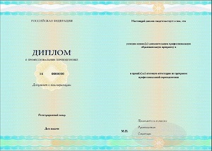
В организациях, где численность водительского состава до 150 водителей - создаётся отдельная штатная единица специалиста по БД, более 150 водителей - минимум 2 штатные единицы ( РД-200-РСФСР-12-0071-86-03).
Однако, не стоит путать функции контролёра технического состояния ТС и специалиста по безопасности дорожного движения. Один человек может совмещать две эти должности, но должностные обязанности каждой из специальностей, равно как и квалификационные требования - совершенно разные и будут рассмотрены отдельно.
Ответственный за БДД должен:
Диспетчер должен:
Контроллер технического состояния ТС должен:
Скачать должностные инструкции специалистов Вы можете на странице Download
Контролер технического состояния ведет следующие журналы
Диспетчер ведет только один журнал -
А вот специалист по БДД ведет несколько журналов:
Стоит отметить, что ни в одном правовом документе нет четкого перечня необходимых для ведения журналов. Перечисленные выше журналы могут быть однозначно затребованы инспектором надзорного органа при проверке. Однако, учитывая перечень должностных обязанностей специалистов, связанных с эксплуатацией транспорта, всегда есть возможность расширить вышеуказанный список. Так, можно самостоятельно создать и вести, например, журналы учёта сверхнормативных простоев ТС или журнал контроля и учета выполненных перевозок грузов. В этом деле принцип один: чем больше бумаги, тем чище одно место!

Выпускать автомобили на линию должны специалист по безопасности дорожного движения и контролёр по выпуску ТС на линию, прошедшие обучение в соответствии с приказом №287 Минтранса РФ. Если один из этих сотрудников выбывает в связи с отпуском или по болезни, его должен подменить другой ОБУЧЕННЫЙ сотрудник, назначенный соответствующим приказом.
В соответствии со статьёй 12.31.1 КоАП РФ выпуск автомобилей и водителей с нарушением профессиональных и квалификационных требований, предъявляемых к работникам - влечет наложение административного штрафа на юридических лиц - ста тысяч рублей.
Вывод: Так как, с точки зрения трудового законодательства, не давать сотруднику отпуск - проблематично, а найти неболеющего механика - вообще нонсенс, целесообразно:
Предрейсовый технический контроль по аутсорсингу ТУТ!
Начать стоит с того, что отсутствует законодательно закреплённая методика проведения осмотра автомобиля перед рейсом. Существует только Приказ Минтранса о предрейсовом техконтроле и ссылка на то, что проводится он должен в соответствии с Техрегламентом Таможенного Союза. Однако ни один из приведенных документов не содержит конкретики в отношении того, КАК проводить техосмотр. Соответственно, раз нет методики её нужно изобрести!
Ориентироваться стоит на перечень неисправностей, с которым запрещена эксплуатация, а также на вышеуказанный Приказ.
ВИЗУАЛЬНЫЙ ОСМОТР
КОНТРОЛЁР В АВТОМОБИЛЕ
ВОДИТЕЛЬ ЗА РУЛЁМ
ЗАКЛЮЧИТЕЛЬНЫЕ МЕРОПРИЯТИЯ
Представленный регламент проведения предрейсового технического контроля не может претендовать на исключительную полноту и безошибочность, однако его вполне можно использовать, как ориентир при формировании, например, положения о предрейсовом контроле. При использовании на других ресурсах в сети интернет, просьба указывать ссылку на первоисточник - https://предрейс.рф

Никаких нормативных требований к постам проведения предрейсового осмотра автомобиля не существует. Наличие смотровой ямы, аргоновой сварки и запаса двигателей с коробками передач не требуется. Так как процедура предрейсового технического контроля ТС проводится на 90% визуально, кажется целесообразным выполнять её при освещении (естественном/искусственном), а также под навесом, защищающим от осадков. ВСЁ!
По поводу инструментария специалиста по предрейсовому техконтролю: Учитывая предыдущую статью о методике проведения техконтроля можно сделать вывод, что
Минимальный инструментарий любого специалиста по предрейсовому техническому контролю должен включать:
Также контролёр технического состояния в своей работе может (не обязательно) использовать:
НИКАК! Такого понятия, как послерейсовый технический осмотр автомобиля просто не существует. Да и какой в ней был бы смысл, если утром придётся повторять тот же самый осмотр?
Также, предлагаю взглянуть в опросный лист инспектора Ространснадзора (можно и в чек-лист МВДшника), где есть пункт 27 о ПРЕДРЕЙСОВОМ техконтроле:
Проводится ли проверяемым юридическим лицом или индивидуальным предпринимателем предрейсовый осмотр технического состояния ТС?
но нет пункта, требующего от ООО или ИП подтвердить проведение послерейсовых мероприятий. Следовательно, инспектор не имеет права требовать подтверждения проведения послерейсового техконтроля.
Таким образом, руководствуясь здравым смыслом, целесообразно ставить подпись контролёра в графе путевого листа "Автомобиль принял", а также заверять показания одометра после возвращения транспорта к месту парковки (требование Приказа Минтранса №152, но нет необходимости вести какой-либо отдельный журнал на этот счёт.
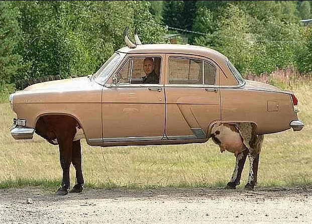
По поводу обязательности наличия у водителя путевого листа и его формы существует несколько мнений:
Таким образом, главный транспортный Закон как бы не требует ведения путевого листа, но он всё же необходим по другим законам и приказам, да и с путевыми листами проще жить и работать. Во первых - путевой лист, помимо ключевых реквизитов, включает отметки медика о прохождении предрейсового медосмотра и механика о предрейсовом техническом осмотре. Наличие последнего должно "успокоить" сотрудника ГИБДД или УГАДН (транспортного инспектора) и не провоцировать на вызов в территориальное подразделение на документарную проверку. О законности последнего существует много споров, но исходить целесообразнее из здравого смысла и экономии времени.
Кстати, путевые листы являются первичной отчетной документацией и хранятся не менее 5 лет.

Для автотранспортных предприятий, занимающихся перевозками пассажиров, опасных грузов и международными перевозками обязательно применение унифицированных форм путевых листов, остальные могут вести путевые листы свободной формы (письмо Минфина России от 20.02.2006г. №03-03-04/1/129, письмо Минфина России от 25.08.2009г. №03-03-06/2/161), с указанием обязательных реквизитов (Приказ Минтранса РФ от 18.09.2008г. №152 "Об утверждении обязательных реквизитов и порядка заполнения путевых листов"):
По наиболее часто используемым "госкомстатовских" формам путевых листов (Приказ №78), коротко:
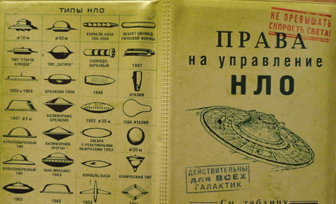
Для ответа на этот вопрос необходимо сначала разобраться с определениями.
В соответствии с п.10 Приказа Минтранса №152 путевой лист выдается на 1 рабочий день (смену), либо на больший период, если продолжительность рейса превышает продолжительность смены. Другими словами, если водитель едет в командировку (не успеет вернуться из пункта назначения за 1 день, или, примерно 300 км в одну сторону), можно выдать путевой лист на несколько дней. Срок действия путевого листа больше не ограничен 30 днями, однако выдать путевой лист на месяц с маршрутом по 1 городу тоже больше нельзя.
Вывод: если транспорт Вашей организации не совершает междугородние перевозки, используйте по 1 путевому листу на 1 водителя на каждую рабочую смену.
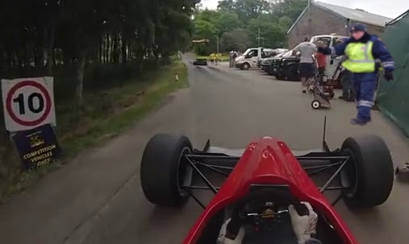
Согласно Приказам Минтранса №152 (п.12,13,14,16.1) и №7 (п.2.5. Перечня мероприятий), в путевом листе механик (контролёр технического состояния) расписывается и указывает ФИО трижды:
Нигде нет указания на то, что по результатам предрейсового технического осмотра автомобиля должна стоять печать или штамп, однако наличие "синих отметок" в путевом листе убеждает большинство инспекторов на дороге в серьёзности отношения автопредприятия к безопасности дорожного движения. По этой причине ниже - образцы штампов механика и медика.
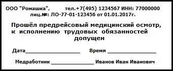
Административная ответственность за управление транспортным средством водителем, не имеющим при себе документов, предусмотренных Правилами дорожного движения наступает в соответствии с Кодексом Российской Федерации об административных правонарушениях от 30 декабря 2001 г. N 195-ФЗ (КоАП) по статье 12.3, п.2. - влечет предупреждение или наложение административного штрафа в размере пятисот рублей.
Самое неприятное, что за наложением штрафа следует приглашение руководителя предприятия-эксплуатанта транспорта в территориальный отдел ГИБДД, либо УГАДН со всеми документами, перечисленными в вопросе о том, что проверяет ГИБДД. Ведь если нет путевого листа, значит не проводятся и прочие обязательные мероприятия, включая предрейсовый медосмотр водителя и предрейсовый технический контроль автомобиля. То есть, по факту фирму ждёт внеплановая проверка, при которой однозначно будут выписаны штрафы по КоАП 12.31.1 (см.ниже).
Административная ответственность при нарушении правил перевозок и эксплуатации автотранспорта наступает в соответствии с Кодексом Российской Федерации об административных правонарушениях от 30 декабря 2001 г. N 195-ФЗ (КоАП) по статье 12.31.1 (Нарушение требований обеспечения безопасности перевозок пассажиров и багажа, грузов автомобильным транспортом и городским наземным электрическим транспортом):
В соответствии с Уголовным Кодексом РФ, Статья 266 "Недоброкачественный ремонт транспортных средств и выпуск их в эксплуатацию с техническими неисправностями", в случае ДТП с летальным исходом: от 5 до 7 лет лишения свободы.
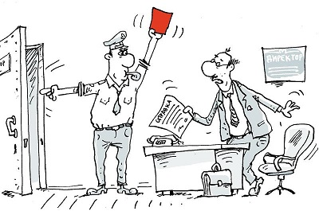
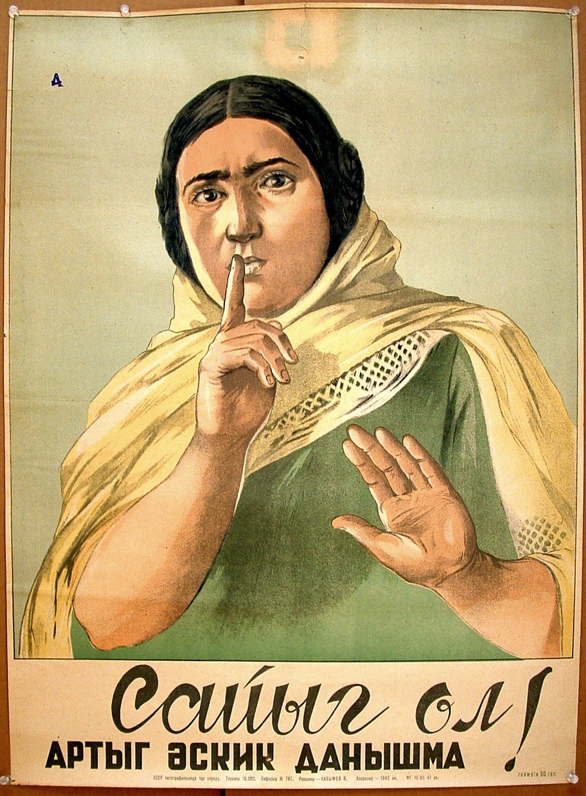
В соответствии с Приказом Министерства транспорта РФ от 28 сентября 2022 г. N 390 с 1 марта 2023 года в силу вступают изменения в порядок ведения путевых листов. Нововведения связаны в первую очередь с возможностью оформления транспортной документации в электронном виде, однако есть несколько интересных нововведений:
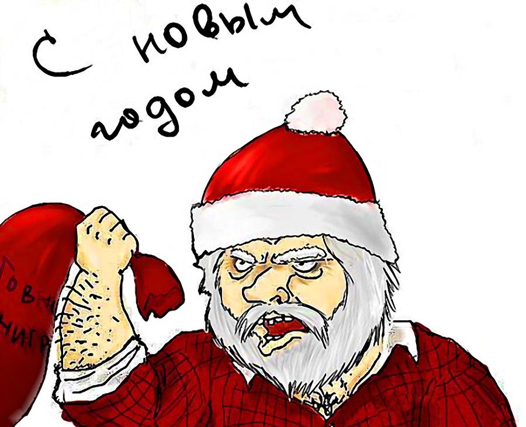
С точки зрения Законов водителем транспортного средства физического лица является любой человек, управляющий автомобилем и вписанный в полис ОСАГО. Водителем же автомобиля юридического лица, а равно и ИП, может быть только лицо, допущенное к управлению руководством владельца ТС и соответствующее квалификационным, медицинским и другим требованиям. Другими словами, законодательство различает водителей-любителей на собственных авто и водителей-профессионалов, эксплуатирующих ТС для нужд бизнеса.
Если рассматривать вопрос с точки зрения сотрудника ГИБДД, проверяющего документы на дороге, то здесь всё просто. Комплект документов, предъявляемых сотруднику ГИБДД, согласно Правилам дорожного движения включает:
С точки зрения контролирующих органов ситуация выглядит сложнее. В большинстве случаев необходимо доказать соответствие лица, управляющего ТС, квалификационным требованиям, предоставить данные контроля за его маршрутом, рабочим временем, состоянием его здоровья.
Таким образом, водителем может быть лицо:
Что делать, если автомобилем организации управляет генеральный директор, главный бухгалтер или другой сотрудник, которого "не хочется" оформлять водителем?
Чтобы не вводить в штатное расписание ставку водителя и не расчитывать зарплату совместителя, необходимо в трудовой договор и должностную инструкцию сотрудника, эксплуатирующего автомобиль, внести пункты о возможности использования (управления) ТС в рабочее время для производственных нужд.
Параллельно, руководителем организации издается приказ с перечнем автомобилей и сотрудников, эксплуатирующих эти автомобили. На основании приказа водителю выписывается путевая документация.
Необходимо помнить, что указанная схема не освобождает таких сотрудников от прохождения предрейсовых процедур.
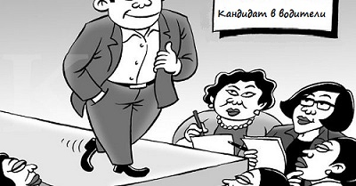
Автомобиль юридического лица должен служить производственным целям, т.к. он был куплен на средства предприятия, амортизируется за счёт предприятия, и чаще всего заправляется и обслуживается за счёт предприятия.
Таким образом, при использовании автомобиля для личных нужд сотрудником, у последнего возникает доход в натуральной форме (статья 23 НК РФ), соответственно возникает налогооблагаемая база. Если перерасчёт налогов не проводится - это повод обвинить предприятие в уклонении от уплаты налогов. Сумму налога нужно расчитывать исходя из средней рыночной стоимости арены/проката аналогичного авто в регионе нахождения предприятия.
Пример: предприятие для зам.директора приобрело в лизинг автомобиль, к примеру Ауди Q8. Стоимость проката такого авто в Москве - от 15000 рублей в сутки х 30 дней = минимум 450 000 рублей в месяц. Именно на эту сумму и получил доход в натуральной форме зам.директора. Именно с этой суммы должны быть удержаны налоги.
Таким образом, использование автомобиля фирмы для собственных нужд возможно посредством заключения договора аренды ТС по рыночным ценам, и уж точно не ниже суммы амортизации ТС и стоимости расходных материалов и ГСМ, затраченных предприятием-владельцем ТС.
- "А мы никому не скажем, что зам.директора по личным вопросам разъезжает...!"
В таком случае, зам.директора из предыдущего примера выполняет производственное задание, следовательно является водителем-профессионалом, следовательно, должен соответствовать квалификационным требованиям и иметь право управлять данным ТС (см. выше), следовательно - иметь путевой лист с отметками медика о предрейсовом медосмотре и механика о предрейсовом техническом контроле.
- "А мы сделаем фиктивный договор аренды ТС и будем его показывать только ГИБДДшникам...!"
Пока многих сотрудников ГИБДД вообще устраивает формулировка водителя "У меня доверенность!" Однако, всё чаще инспекторы проявляют удивительную грамотность в плане транспортного законодательства и всё чаще некоторые из них понимают, насколько "более жирными гусями" являются представители бизнеса. Да простят меня уважаемые и честные сотрудники надзорных органов, но коррупция в ГИБДД пока побеждена не полностью!
В итоге, если сотрудник, управляющий легковым авто фирмы, на вопрос инспектора о путевом листе "поплывёт", то получит штраф по ч.2, ст.12.3 на 500 рублей, а предприятие и руководство, по 12.31.1. вместе получат от 70000-190000 рублей штрафа, до ареста автомобилей.
Но, речь даже не о ГИБДД, а о налоговой. Если предприятие владеет автомобилями, при проверке будут запрошены все документы, связанные с его эксплуатацией (либо договор аренды, либо путевые листы со всеми обязательными реквизитами, являющиеся основанием для списания ГСМ).
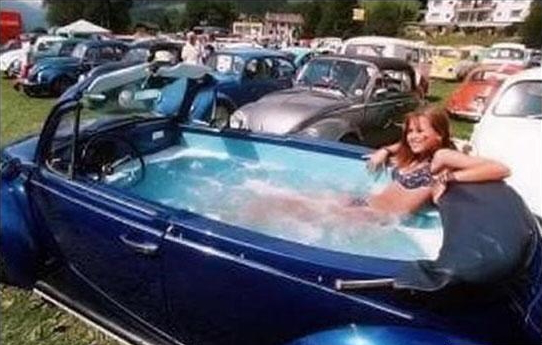
Приёму водителей на работу посвящен Приказ Министерства транспорта РФ от 11 марта 2016 г. № 59.
Вышеприведенный приказ касается:
Профессиональный отбор проводится юридическими лицами и индивидуальными предпринимателями с целью привлечения к выполнению обязанностей, непосредственно связанных с движением транспортных средств, лиц, имеющих уровень компетенции, необходимой для надлежащего осуществления возлагаемых на них трудовых функций и соответствующей требованиям, предъявляемым к ним в соответствии с законодательством Российской Федерации.
Лицо, претендующее на работу в организации в качестве водителя, может быть принято на эту работу при условии:
Работодатель, при приёме водителя на работу обязан:
Уверен, что, как того требует приказ, Вы храните по 5 лет все листы собеседования со всеми претендентами в водители!
Инструктажи водительского состава - очень важный пункт раздела "Повышение компетентности и профессионального мастерства". "Некомпетентность и немастеровитость" водителей (равно, как и ответственного за БДД, проводящего инструктажи) обойдётся предприятию в 100 000 рублей, в соответствии со статьёй 12.31.1 КоАП РФ.
Всё вроде бы не сложно, но есть нюансы:
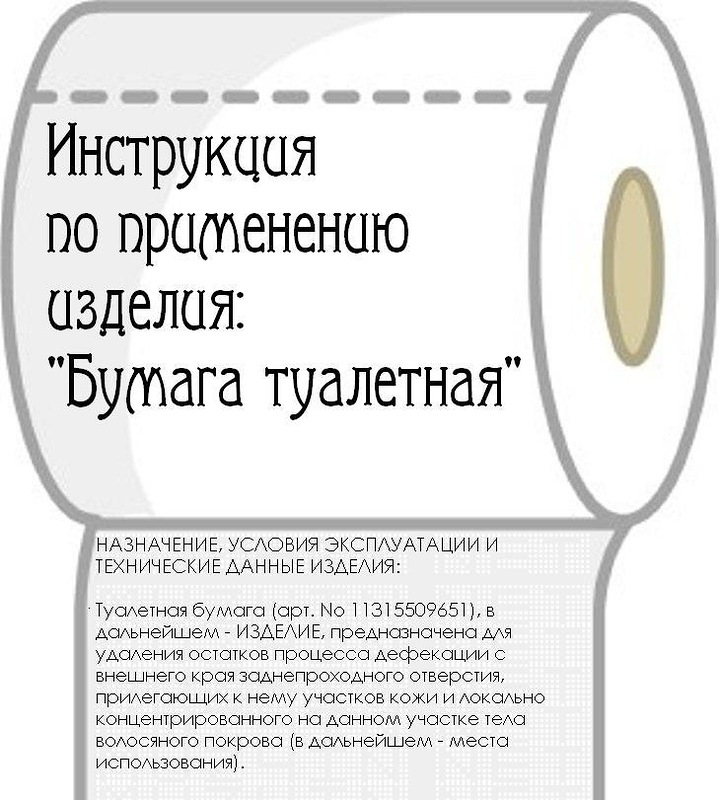
Начнём с того, что же такое стажировка?
Стажировка - повышение профессионального мастерства водителей. Т.е., с точки зрения законодательства, принимая водителя на работу нельзя быть уверенным, что водитель достаточно квалифицирован. А то, что он имеет водительское удостоверение и, возможно, многолетний стаж работы, как бы ничего не значит. Прямое требование создавать условия для повышения квалификации водителей и проводить стажировку устанавливается статьей 20 Федерального Закона от 10.12.1995г. №196-ФЗ "О безопасности дорожного движения", приказом Минтранса №7 от 15.01.2014г (Приложение №2, п.1.3), а также приказом Минтранса №59.
В каких случаях водитель должен пройти стажировку?
В вышеозначенных Приказах указано, что стажировка проводится всем работникам, непосредственно связанным с движением транспортных средств, при приеме на работу, при переводе на новый маршрут и при переводе на новый тип (модель) транспортного средства.
Хорошо! А всё-таки как провести стажировку и нужно ли водителю категории, например, "В" проходить ту самую стажировку?
Тут сложнее! Единственный документ, регламентирующий проведение стажировки водителей - Рд-200-РСФСР-12-0071-86-09 от ДА-ДА! 20.01.1986 года. Это действующий документ и ничего более свежего в настоящий момент нет!
Итак:
То есть, если на работу принят водитель категории "В", стажировка не нужна?
Ничего подобного! Статья 212 ТК РФ об обязанностях работодателя по обеспечению безопасных условий и охраны труда требует недопускать к работе лиц, не прошедших в установленном порядке обучение и инструктаж по охране труда, стажировку и т.д. Таким образом, стажируем ВСЕХ водителей!
А как быть, если водитель в организации всего один? Как и кому стажировать водителя ИП, который работает сам на себя?
Надзорным органам до этого, по большому счёту, дела нет. Проводите стажировку, как хотите, но по Закону и в обязательном порядке! С точки зрения инспектора УГАДН ситуация угадывается однозначно: отсутствие стажировки водителей - грубое нарушение требований по обеспечению безопасности дорожного движения! с соответствующим наказанием по КоАП.
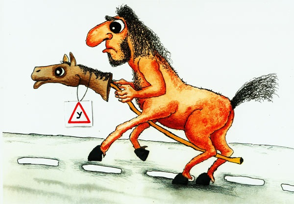
Одним из мероприятий, организации которых требует законодательство, является обязательное ежегодное обучение водителей по 20-часовой программе. Программа эта утверждена (РД-26127100-1070-01), организация не сложна. Однако, целесообразно расширить раздел по оказанию первичной медицинской помощи, т.к. это требование есть в чек-листе.
Есть 3 варианта организации учёбы водителей:
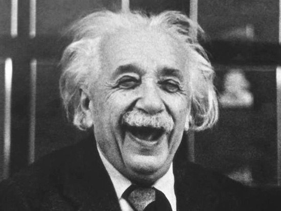
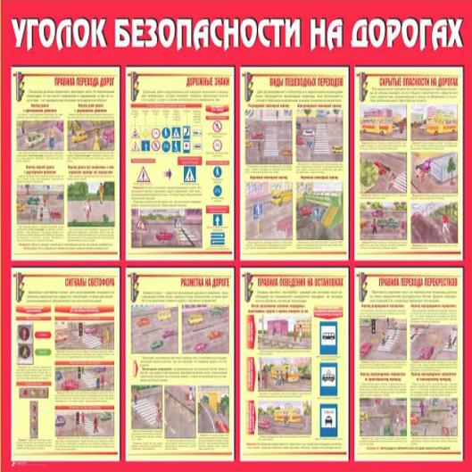
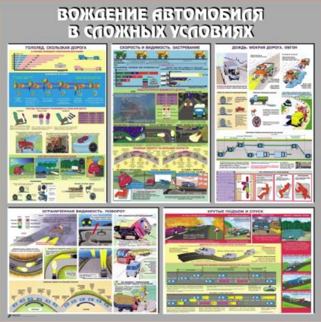
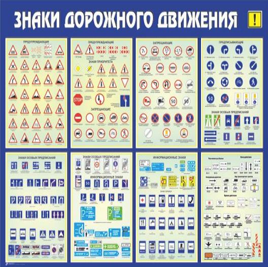
Уголком по безопасности дорожного движения, по идее должна быть диспетчерская или кабинет механика, но подойдет абсолютно любое помещение. Желательно, чтобы в этом помещении стояло несколько столов, т.к. в подобном классе можно проводить ежегодное обучение водителей по 20-часовой программе (см. выше).
На стене должны висеть следующие плакаты:
Вообще, информацию о том, какие именно плакаты должны висеть, в нормативно-правовых актах найти сложно, поэтому руководствуйтесь здравым смыслом, советским РД-200-РСФСР-12-0071-86-07 и российским приказом Минтранса №59.
Кстати! Иногда возникает вопрос о том, чем уголок по безопасности дорожного движения отличается от класса. Так вот: организовывать класс (т.е. отдельное учебное помещение с определённой площадью) нужно в случае численности водителей в штате более 150! человек. Если меньше - хватит и уголка в любом кабинете предприятия с плакатами, о которых говорилось выше. Нормативы всё в том же РД-200.
Ответ: НУЖНО!
Согласно Федеральному Закону от 10.12.1995г. №196-ФЗ обязательные медосмотры проводятся в течение всего времени работы лица в качестве водителя транспортного средства, за исключением водителей, управляющих транспортными средствами, выезжающими по вызову экстренных оперативных служб. Никаких указаний на то, что можно обойтись без предрейсовых медосмотров "нетранспортным" или каким-либо еще организациям - нет. Предрейсовые медицинские осмотры должны организовать все предприятия, независимо от типа собственности, осуществляющие эксплуатацию автотранспорта.
ВОДИТЕЛЬ ДОЛЖЕН БЫТЬ "ИСПРАВЕН" В ЛЮБОЙ ОРГАНИЗАЦИИ, НЕЗАВИСИМО ОТ ЕЕ ФОРМЫ СОБСТВЕННОСТИ, НАПРАВЛЕНИЯ ДЕЯТЕЛЬНОСТИ И КОЛИЧЕСТВА АВТОМОБИЛЕЙ.
К тому же, пункт 4, статьи 23 вышеуказанного Закона гласит: "Требование о прохождении обязательных медицинских осмотров распространяется на индивидуальных предпринимателей в случае самостоятельного управления ими транспортными средствами, осуществляющими перевозки".
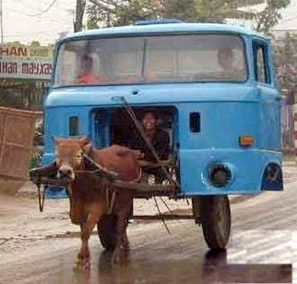
Организовывать и проводить предрейсовые медицинские осмотры имеет право только медицинская организация, имеющая лицензию на выполнение соответствующего вида работ (Постановление Правительства РФ от 16 апреля 2012 г. №291 "О лицензировании медицинской деятельности").
Медработник, проводящий предрейсовые медосмотры должен состоять в штате медицинской организации, имеющей лицензию, а также должен иметь документ о соответствующем повышении квалификации (Приказом Минздрава №835н).
КСТАТИ: В свое время, при обновлении Федерального Закона №196-ФЗ (статья 23, п.7, последний абзац), в него попала следующая формулировка: Обязательные предрейсовые и послерейсовые медицинские осмотры водителей транспортных средств проводятся либо привлекаемыми медицинскими работниками, либо в порядке и на условиях, предусмотренных частью 4 статьи 24 Федерального закона от 21 ноября 2011 года N 323-ФЗ "Об основах охраны здоровья граждан в Российской Федерации".
Возник вопрос о возможности проведения предрейсовых медосмотров без лицензии, т.к. часть 4 статьи 24 Федерального закона "Об основах охраны здоровья..." от 21 ноября 2011 года №323-ФЗ гласит: В целях охраны здоровья работодатели вправе вводить в штат должности медицинских работников и создавать подразделения (кабинет врача, здравпункт, медицинский кабинет, медицинскую часть и другие подразделения), оказывающие медицинскую помощь работникам организации. Порядок организации деятельности таких подразделений и медицинских работников устанавливается уполномоченным федеральным органом исполнительной власти.
В итоге, уполномоченный федеральный орган исполнительной власти, а именно Министерство здравоохранения РФ издало Приказ №835н от 15.12.2014г., пункт 8 которого гласит: Предсменные, предрейсовые и послесменные, послерейсовые медицинские осмотры проводятся медицинскими работниками ..., медицинской организацией ... при наличии лицензии на осуществление медицинской деятельности, предусматривающей выполнение работ (услуг) по медицинским осмотрам (предрейсовым, послерейсовым), медицинским осмотрам (предсменным, послесменным).
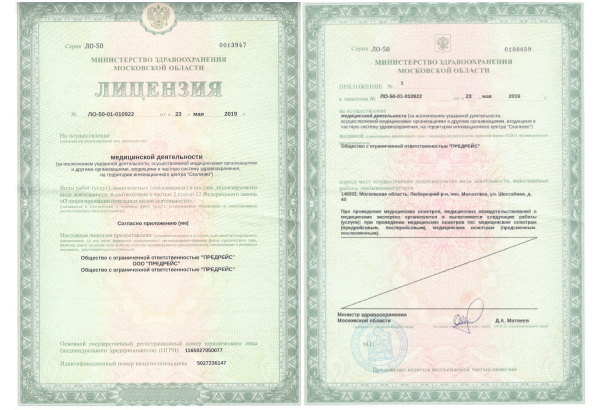
Ответ: НЕТ. Т.к. во всех без исключения законах про предрейсовые медицинские осмотры упоминаются именно водители предприятий, т.е. лица, являющиеся сотрудниками фирм, эксплуатирующих транспортные средства.
Таким образом, предрейсовый медосмотр не нужно проводить тем, кто взял авто в прокат, равно как и ученикам автошкол.
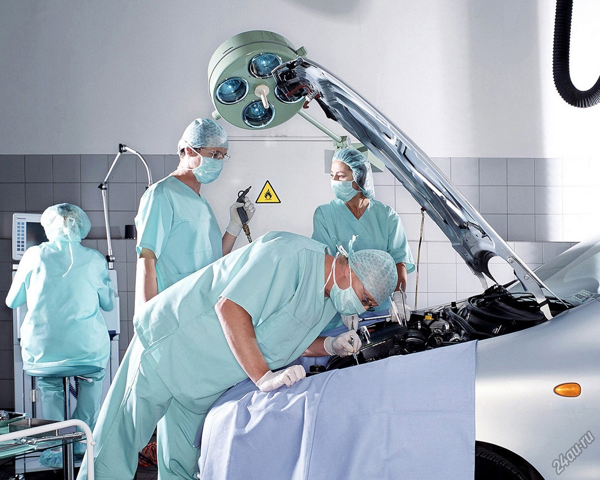
В соответствии со статьей 23 Федерального Закона №196-ФЗ пункт 3, абзац 4, послерейсовый медосмотр проводится в том случае, "если работа связана с перевозками пассажиров или опасных грузов".
Под перевозкой понимается зарабатывание денег на доставке чего-либо, куда-либо. Т.е., если автомобиль фирмы доставляет собственных сотрудников без взымания с них платы за проезд (либо, отсутствует договор перевозки пассажиров), то это будет считаться не перевозкой, а деятельностью, связанной с эксплуатацией автомобиля. Также, в вышеуказанном Законе (статья 20, заголовок п.2) можно встретить формулировку "перемещение лиц, кроме водителя, и (или) материальных объектов автобусами и грузовыми автомобилями без заключения указанных договоров (перевозки для собственных нужд автобусами и грузовыми автомобилями)".
В итоге, если у Вас такси, перевозка пассажиров за деньги или по договору перевозки, либо если у Вас есть ДОПОГ (перевозка действительно опасных грузов) - придётся организовывать не только предрейсовый, но и послерейсовый медосмотр.
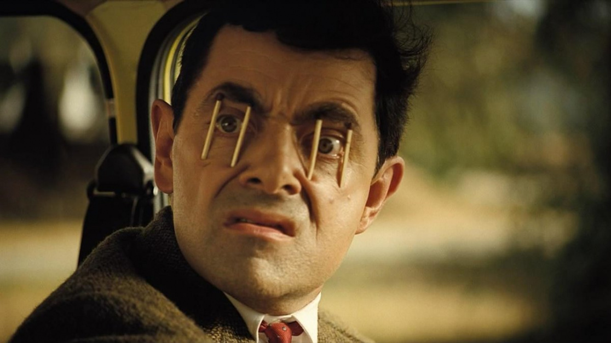
Нет!
Послерейсовый медосмотр необходим только при перевозке пассажиров и опасных грузов. Слух о необходимости проводить послерейсовый медосмотр после командировок (рейсов, продолжительностью более 1 дня) возник после появления письма от Минтранса от 8 апреля 2019 г. № Д3-531-ПГ. Данное письмо является методическим разъяснением (уточнением) по процедурам выпуска ТС на линию. Благодаря некорректным формулировкам письма может сложиться ощущение, что послерейсовые медосмотры необходимо проводить после каждого рейса, независимо от того, что перевозит автомобиль. Однако, это не так! Никаких изменений в нормативные акты не вносилось, следовательно порядок проведения послерейсовых медосмотров не менялся!
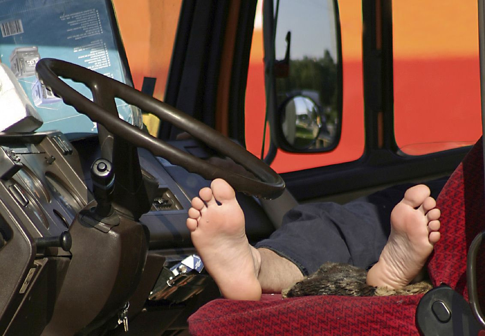
По сути, послерейсовый и предрейсовый медосмотр методологически не различаются.
Водитель, вернувшийся с рейса, должен передать автомобиль на хранение, после чего пройти к медработнику на медосмотр. Последний, в свою очередь, должен оценить уровень артериального давления, частоту пульса, наличие/отсутствие признаков алкогольного и токсического опьянения, а самое главное, однако не отраженное в нормативных документах - оценить наличие переутомления у водителя.
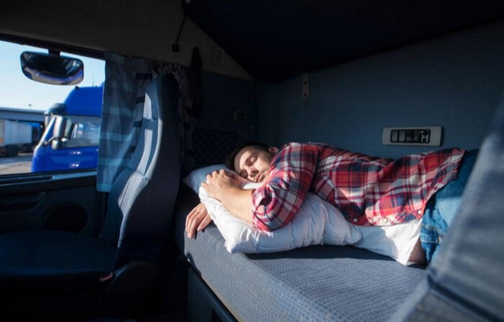
Задайте свой вопрос
любым удобным спообом
+7 925 028 87 55
+7 926 799 61 36
predreis@predreis.online